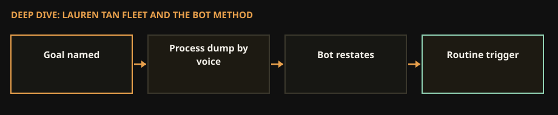

Deep Dive: Lauren Tan Fleet and the Bot Method
The richest X source in the sweep: a 15 bot roster, runtime verification with blind evals, and a four step bot design method from her own article. Sources: workshop analysis with artifact checks, her X article via transcription, and podcast reports. Confidence: Medium. Output numbers are her self reports.

The roster
1 Chief of Staff 3 Managers 11 Execution Assistants Total: 15 named AI assistants Her output claims, self reported: near 1,000 PRs merged in one month near 800 PRs in the first 12 days of one month 20 PRs auto merged overnight, clean on post merge check 600 plus PRs on one migration to an agent friendly architecture with a 5 layer enforcement list
The core technical claim
An AI that writes code is not a loop until it can run the code. Runtime verification makes autonomy safe. Her open source plugin set holds verification skills that create and maintain a check per surface, and the checks run under blind evals: workspace paths in disguise and cross model judges, so the agent under test cannot game the eval it can see. Two commands compose in her system: one builds a feature, one updates the feature map, and a maintenance command catches map drift.
Benny: the bug bot pattern
A named bot watches the bug channel. On a report, the bot boots a cloud desktop, reproduces the issue, and compares behavior against main. The same loop runs on alerts: a metric threshold fires, a bot reproduces on its own machine, finds the fault, and writes a fix. A second worked case ran inside one Slack thread of near 200 messages: a cloud agent with its own machine prototyped a feature and posted videos and screenshots back, the human never opened the editor, and the team reviewed artifacts in place of a diff.
The bot design method, from her article
- Name the goal: what the work is for. Her warning: most people name the process, a form or a mail, in place of the goal.
- Brain dump the process by voice: the steps, the tools, where facts come from, and how the work gets checked.
- Make the bot restate the goal and the process before it starts. A wrong restate costs one message. A wrong run costs a day.
- Set the routine: a trigger on a mail, a message, or a schedule. With no routine, a bot works only when asked, and the fleet decays to a chat toy.
- Her designer bot builds new bots after a short preference talk. Design bar from the listing: coding bots get one job, clean output, verified. Other bots get one job, one voice, explicit anti jobs, and no leftover tools.
The Sanchez rules, with the accounting flag
Codie Sanchez runs a public bot experiment with three rules: no work by her after setup, a hard spend cap, and cash or real savings only as the score. The reusable systems from the walkthroughs: a finder bot that dedupes leads into a sheet, a drafter bot that writes outreach and holds each draft for her approval, and a flipping chain with a cost check before any money moves. The flag, stated plain: the headline return counts booked calls at estimated pipeline value, not cash, which breaks her own third rule. Take the structures. Leave the score.
Apply this to your work
Your agent fleet holds the Tan shape in part: named lanes with one job each. Two adds pay at once. One: runtime verification as a skill per surface, with blind evals on your audit lanes, since your auditors and builders can share context in ways that let a weak build pass. Two: the restate step as law for every lane start: the lane restates goal, process, and check in its first message, and you correct the restate in place of correcting the output a day later. Her anti jobs line also sharpens your lane cards: name what a lane must never do, in the card, next to the job.
Replication checklist
- Add a restate block to your lane card template: goal, process, check, anti jobs.
- Build one verification skill for your most shipped surface. Add a blind variant.
- Give each standing bot a routine trigger. A bot with no trigger gets a schedule or a cut.
Prompt file: prompts/chief-of-staff-bot.md.
Visual map of this page
Two views of one page: a Mermaid flow for work order, rendered by the local Mermaid library in this folder, and a markmap for concept groups.
Mermaid source, for offline read
flowchart LR A[Name the goal] --> B[Brain dump the process] B --> C[Bot restates both] C -->|wrong| B C -->|right| D[Routine runs] D --> E[Runtime verification] E --> F[Blind eval check]
How to read the flow diagram. Step 1: start at the first box. Step 2: follow each arrow to the next stage. Step 3: at a branch box, read both paths before a choice. Step 4: a loop arrow means work returns for one more pass vs a test.
Markmap: concepts on this page
- Deep Dive: Lauren Tan Fleet and the Bot Method
- Roster
- 1 chief of staff
- 3 managers
- 11 execution
- Safety
- Runtime verification
- Blind evals
- Anti jobs named
- Flags
- Self reported counts
- Sanchez score at pipeline value
- Roster